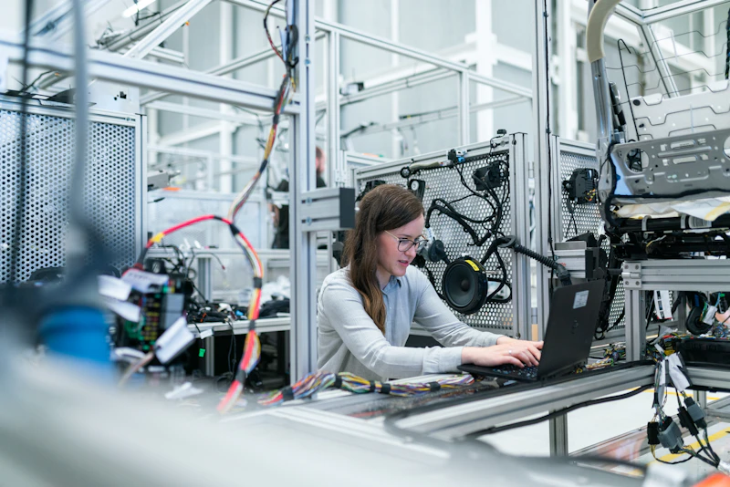
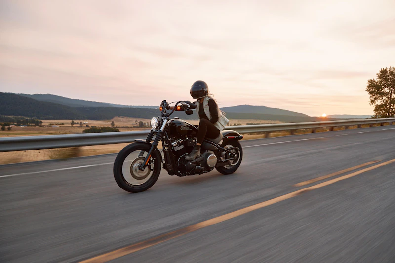
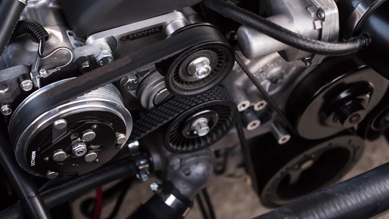
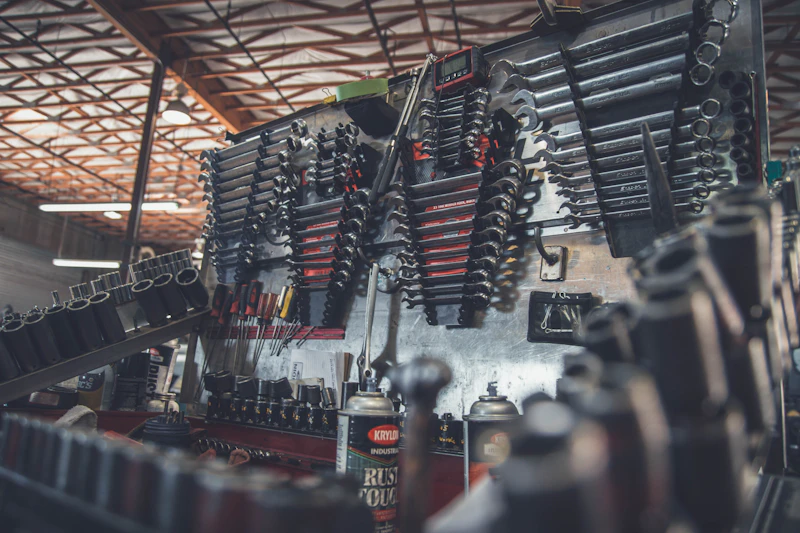
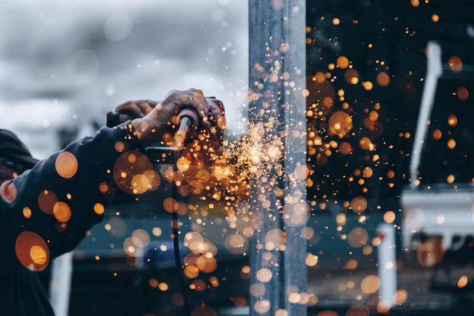
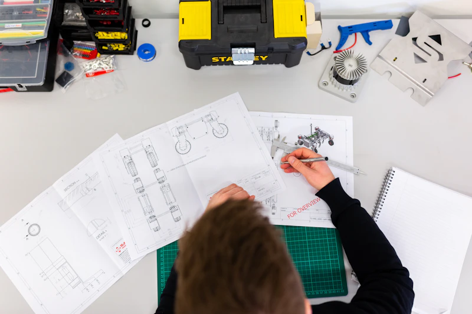
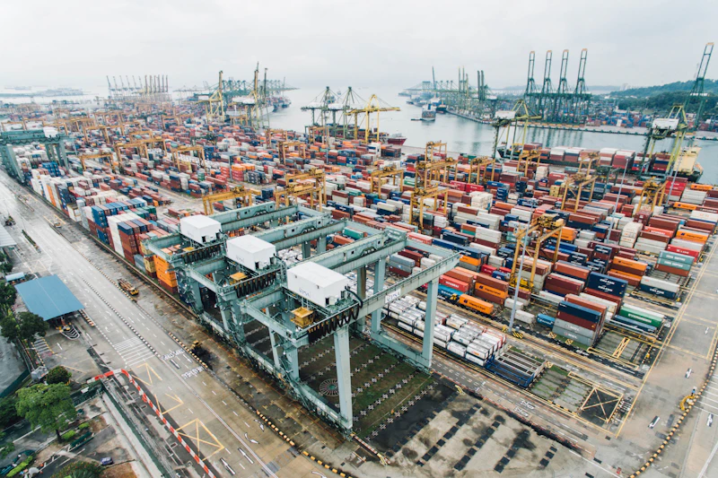

Finding a reliable motorcycle engine manufacturer in China is not only about comparing prices. For many importers, distributors and assembly factories, the engine is the core part of the whole vehicle business. If the engine quality is unstable, the final motorcycle or tricycle will face more complaints, higher repair costs and weaker market reputation. That is why choosing the right engine supplier matters.
China has a mature motorcycle and engine manufacturing industry, especially in cities such as Chongqing, where many experienced motorcycle parts and engine factories are located. However, not every supplier is suitable for long-term cooperation. Some factories focus only on low prices, while others can provide more stable production, technical support, OEM/ODM service and continuous spare parts supply.
In this guide, we will explain what buyers should look at before choosing a motorcycle engine manufacturer in China, and how to select the right engine series for different markets and applications.

1. Start with the Application, Not Only the Price
Before asking for a quotation, the first question should be: where will the engine be used?
A motorcycle engine for daily commuting is different from an engine used for a cargo tricycle. A light motorcycle may need fuel economy and easy maintenance, while a tricycle engine needs stronger torque and better durability under heavy load.
For example, CG series air-cooled engines are widely used in many markets because they have a simple structure, mature design and wide spare parts compatibility. They are practical for daily motorcycles, replacement markets and general transportation.
Water-cooled engines, on the other hand, are more suitable for higher-load use, hot climate conditions and cargo tricycles that work for long hours. They provide better heat control and more stable operation when the engine is under pressure.
A good motorcycle engine supplier should not simply send you a price list. They should ask about your vehicle type, target market, displacement requirement, cooling method, expected quantity and whether you need OEM or ODM support.

2. Check Whether the Factory Has Real Manufacturing Experience
Experience is very important in the engine industry. A manufacturer that has worked with motorcycle and tricycle engines for many years usually understands common market problems better than a new trading company.
Chixiang Motor, for example, was founded in 2003 and has focused on motorcycle engines, tricycle engines and engine parts for more than 20 years. This type of manufacturing background is valuable because engine production requires stable assembly, testing, parts matching and batch consistency.
When evaluating a supplier, buyers should ask:
- How long has the company been producing motorcycle engines?
- Does the supplier manufacture engines directly or only resell from other factories?
- Can they provide different engine series?
- Do they understand overseas market requirements?
- Can they support repeat orders and spare parts supply?
For long-term cooperation, manufacturing experience often matters more than a slightly lower unit price.

3. Compare the Main Engine Series
A reliable motorcycle engine manufacturer should offer different engine solutions, not just one model. Different markets need different engine types.
CG Air-Cooled Motorcycle Engines
CG air-cooled engines are among the most popular choices for many developing and high-demand markets. Their structure is simple, maintenance is convenient and replacement parts are easy to find. These engines are suitable for daily motorcycles, light transport and replacement engine markets.
CG Balance Shaft Engines
For buyers who want smoother operation, a CG balance shaft engine can be a better option. The balance shaft design helps reduce vibration, making the riding experience more comfortable. This type of engine is useful for motorcycle models that need better stability and longer service life while keeping the advantages of the CG platform.
Water-Cooled Motorcycle and Tricycle Engines
Water-cooled engines are designed for stronger cooling performance. They are suitable for heavy-load applications, cargo tricycles and hot weather environments. For markets where tricycles are used every day for transport, farming, delivery or small business, water-cooled engines can help reduce overheating risk and improve long-term performance.
Horizontal Engines
Horizontal air-cooled and water-cooled engines are often used in compact motorcycles and underbone-style models. Their structure helps save space and can be suitable for different frame designs.
Automatic Clutch and CVT Engines
Automatic clutch engines and CVT engines are suitable for customers who want easier operation. These engines are useful in urban traffic, mixed road conditions and markets where simple riding control is important.
Engine Parts
Besides complete engines, engine parts are also important. A good supplier should be able to provide cylinder kits, cylinder heads, clutch parts, magneto coils and other engine components. This helps distributors build a stable after-sales and spare parts business.

4. Pay Attention to Spare Parts Availability
Many buyers focus on the first order, but experienced importers know that spare parts supply is just as important as engine supply. Even a good engine will need maintenance after long use. If spare parts are difficult to get, customers will complain and distributors will lose confidence in the product.
Before choosing a motorcycle engine manufacturer, ask whether they can supply spare parts regularly. This is especially important for CG engines, water-cooled tricycle engines and customized OEM models. A supplier with complete engine and parts support can help you reduce sourcing time and keep your local market running smoothly.
5. Look for OEM and ODM Capability
Many overseas buyers do not only need standard engines. They may need customized color, logo, model matching, packaging, parts combination or engine configuration based on their local market. That is why OEM and ODM service is important.
OEM service is useful when you already have your own brand and want the engines to match your product line. ODM support is helpful when you need the manufacturer to recommend or adjust a solution according to your motorcycle or tricycle platform.
Chixiang Motor supports OEM/ODM cooperation for motorcycle engines, tricycle engines and related parts. For buyers who want to build a long-term product line, this flexibility can save time and reduce development risk.

6. Do Not Ignore Quality Control
Engine quality is not judged by one sample only. The real test is batch stability. A supplier may send a good sample, but the bulk order must also meet the same standard. This is why production equipment, assembly process, testing procedures and inspection systems are important.
When communicating with a factory, buyers should ask about engine testing, production capacity and inspection steps before shipment. It is also useful to check whether the supplier has experience exporting to markets similar to yours. A reliable factory should understand that overseas buyers need stable quality across every container, not just the first order.

7. Choose a Supplier Who Understands Real Road Conditions
Motorcycles and tricycles are used differently in different countries. In some markets, motorcycles are mainly used for commuting. In others, tricycles carry heavy goods every day. Some regions have hot weather, dusty roads, mountain roads or long-distance usage. A practical engine manufacturer should understand these real working conditions.
For example, a water-cooled engine may be better for cargo tricycles that work for long hours. A CG air-cooled engine may be better for markets that need easy repair and lower maintenance cost. A balance shaft engine may be better for customers who care about smoother riding. The best supplier is not always the one who sells the cheapest engine. It is the one who helps you choose the right engine for your market.
8. Communication and Long-Term Support Matter
In international trade, communication speed and technical support are very important. Buyers often need product photos, specifications, packaging details, quotation updates and shipping information.
A good motorcycle engine supplier should answer clearly and provide useful information before and after the order. Long-term support is especially important when you plan to develop a product line or distribute engines in your country. If a supplier only talks about price and avoids technical questions, you should be careful.

Why Work with Chixiang Motor?
Chixiang Motor is a motorcycle engine and parts manufacturer based in Chongqing, China. Since 2003, the company has focused on engines and components for motorcycles, tricycles and related vehicle applications.
The product range includes CG series engines, CG balance shaft engines, air-cooled engines, water-cooled engines, horizontal engines, automatic clutch engines, CVT engines, CB off-road engines and engine parts.
For overseas buyers, Chixiang Motor provides practical engine solutions with OEM/ODM support. The company serves customers in different markets and focuses on stable quality, easy maintenance, parts availability and long-term cooperation. Whether you need engines for daily motorcycles, cargo tricycles, off-road motorcycles or replacement markets, Chixiang Motor can help recommend suitable models based on your application.
Final Thoughts
Choosing a motorcycle engine manufacturer in China should not be a rushed decision. Price is important, but it should not be the only factor. A good supplier should have manufacturing experience, stable product quality, different engine series, spare parts support, OEM/ODM capability and clear communication. More importantly, they should understand how engines are actually used in your market.
If you are looking for CG motorcycle engines, water-cooled tricycle engines, air-cooled motorcycle engines or customized OEM engine solutions, Chixiang Motor can support your sourcing project with practical products and long-term cooperation.
Send Your Requirements — Get a Quote
FAQ
What is the best motorcycle engine type for daily use?
For daily motorcycles, CG air-cooled engines are a popular choice because they are easy to maintain, stable in performance and widely supported by spare parts.
Are water-cooled engines better for tricycles?
Water-cooled engines are often better for cargo tricycles and heavy-load use because they provide stronger cooling performance and more stable operation under long working hours.
Can Chixiang Motor provide OEM motorcycle engines?
Yes. Chixiang Motor supports OEM and ODM cooperation for motorcycle engines, tricycle engines and engine parts.
What information is needed for a quotation?
Please provide the engine type, displacement, cooling method, application, order quantity, destination country and any special customization requirements.